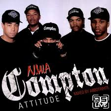
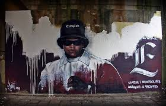

Eric Lynn Wright, mejor conocido como Eazy-E, nació el 7 de septiembre de 1964 en Compton, California. Fue un rapero, productor y empresario estadounidense, conocido por ser uno de los pioneros del gangsta rap y por fundar el legendario grupo N.W.A.
Eazy-E creció en un ambiente difícil, rodeado de violencia y pandillas en las calles de Compton. Durante su juventud, estuvo involucrado en la venta de drogas, lo que le permitió reunir dinero para lanzar su sello discográfico Ruthless Records en 1987.
En 1987, Eazy-E junto a Dr. Dre, Ice Cube, MC Ren y DJ Yella formaron N.W.A, un grupo que revolucionó el hip-hop con su estilo agresivo y letras crudas que reflejaban la vida en los barrios marginados. Su álbum debut Straight Outta Compton (1988) se convirtió en un clásico y estableció el gangsta rap como un subgénero dominante.
Tras la salida de Ice Cube de N.W.A y las tensiones internas, Eazy-E continuó con su carrera en solitario, lanzando el álbum Eazy-Duz-It en 1988, que fue un gran éxito. También ayudó a lanzar las carreras de artistas como Bone Thugs-n-Harmony bajo su sello Ruthless Records.
En 1995, Eazy-E fue diagnosticado con VIH/SIDA, una noticia que sorprendió a la industria del hip-hop. Falleció el 26 de marzo de 1995 a los 30 años. Su muerte dejó un gran impacto en la música y en la conciencia sobre el VIH en la comunidad afroamericana.
A pesar de su corta vida, Eazy-E dejó una huella imborrable en la historia del hip-hop. Es considerado el "Padrino del Gangsta Rap" y su influencia sigue viva en el género, con artistas modernos rindiéndole homenaje en sus canciones y estilo.
